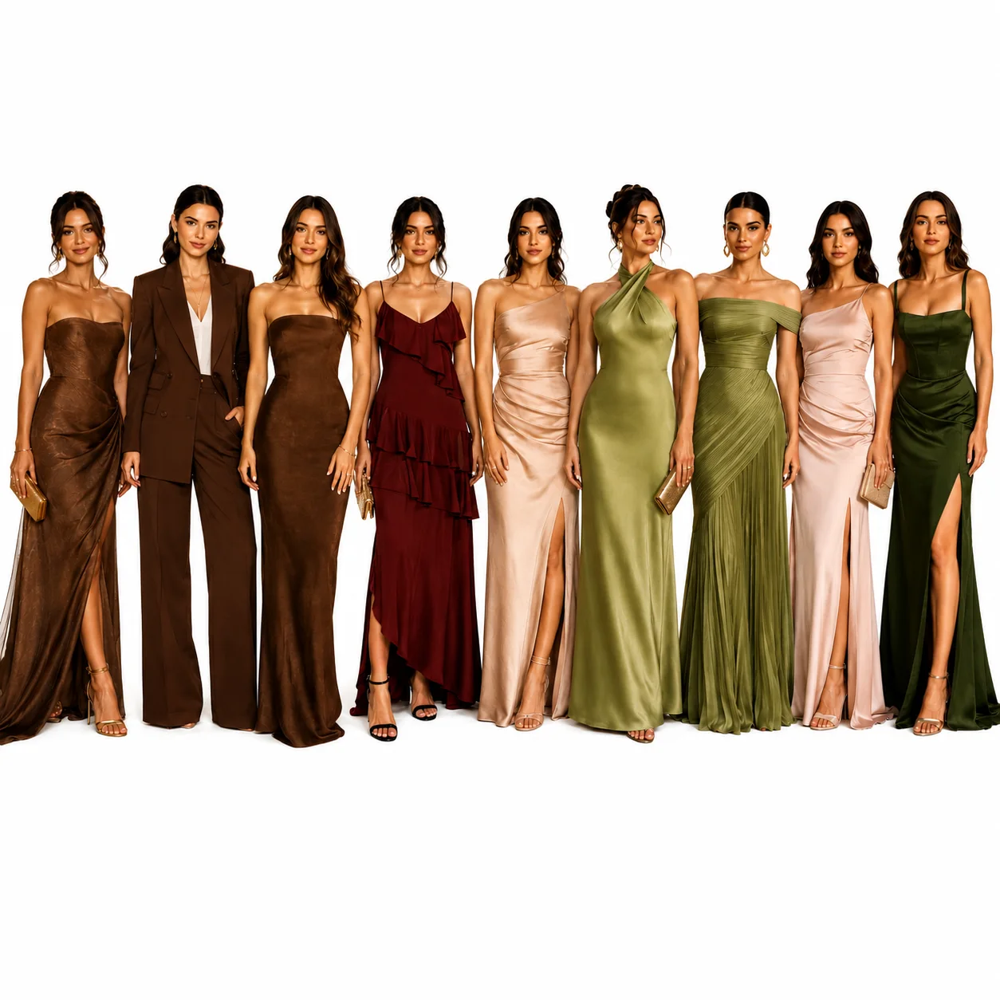
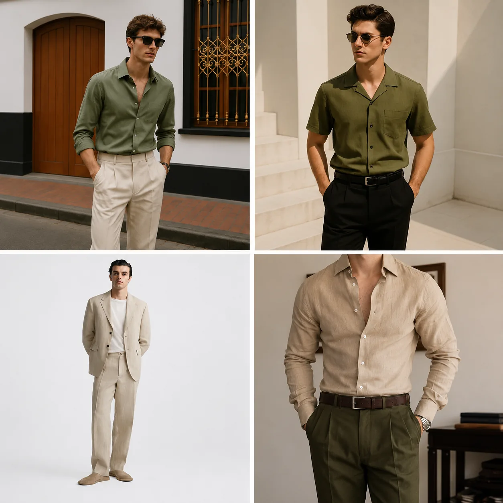

20
августа
2026
До нашей свадьбы
0
дней
00
часов
00
минут
00
секунд
Программа дня
15:00Сбор гостей
15:20Церемония
15:40Банкет
17:00Первый танец
23:00Завершение вечера
Детали
Если вам нужна помощь с дорогой, напишите нам заранее, и мы подскажем удобный маршрут.
Будем благодарны подарку в конверте: он поможет осуществить наши семейные мечты.
Если захотите подарить цветы, выбирайте нежные светлые оттенки или зелень.
Анна: 8 (999) 999-99-99. Егор: 8 (999) 999-99-99.
Dress code
Будем благодарны, если вы поддержите цветовую гамму нашего праздника.
Просим избегать:
- полностью белых образов
- полностью черных образов
- неоновых цветов
- ярких кричащих оттенков
Примеры образов


Подтвердите
свое присутствие
Спасибо, ваш ответ сохранен.